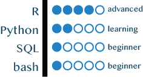

Download my CV
Allée des Alpes
38700 La Tronche
+33 4 76 54 95 76
{kind=link}
Pitch
With a robust background in biology research and design of analysis pipelines, I switched from molecular data production in wet lab to a genuine passion for data science.
I am eager for a new challenge to apply my competences in data science-oriented projects. I am motivated to develop innovative solutions in a stimulating multidisciplinary environment, while able to ingest and learn new programming languages. I value self-teaching and curiousity, perseverance and teamwork, adaptability and creativity.
Programming skills
 I pretty much master R, build packages and any possible vizualisations.
I lately started to learn Python and quickly progress.
Moreover, I also started MOOCs to handle SQL.
The use of shell comes naturally and steadily.
Hard skills
Soft skills
- Communication
- Office / Keynote / LaTeX
- Illustrator
- Management
- team lead
- project management
- KPIs / Gantt charts
- Collaboration
- creative thinking / hypothesis generation / problem solving
- Self-improvement
- self-teaching & active learning
Experience & Education
Free time
Professional address
Institute for Advanced BiosciencesAllée des Alpes
38700 La Tronche
+33 4 76 54 95 76